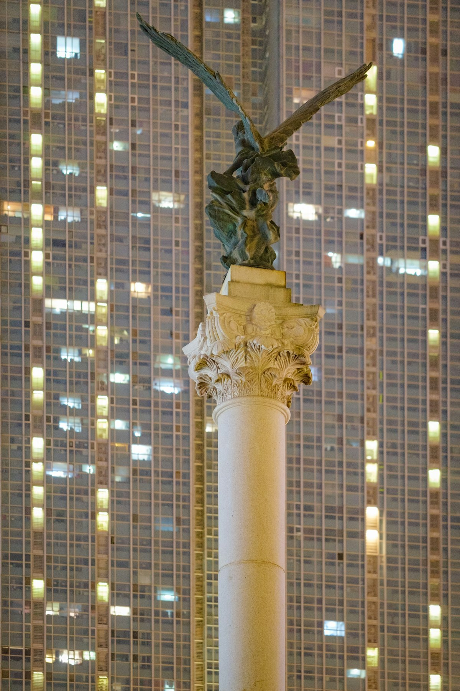
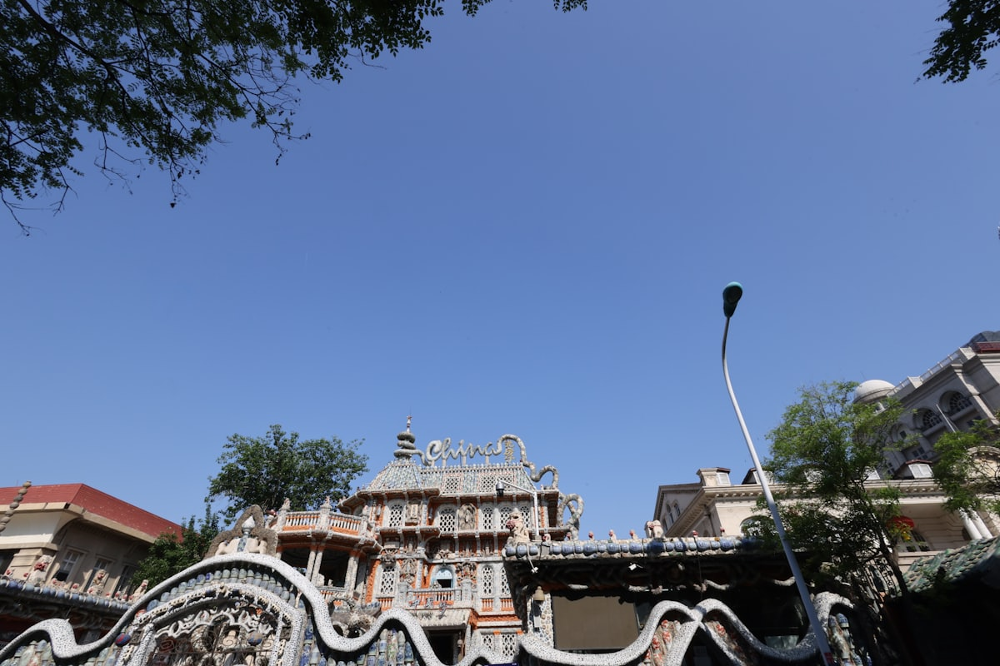
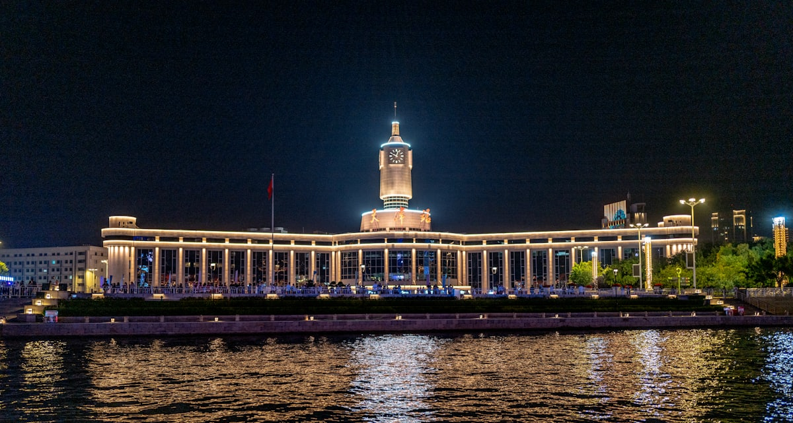
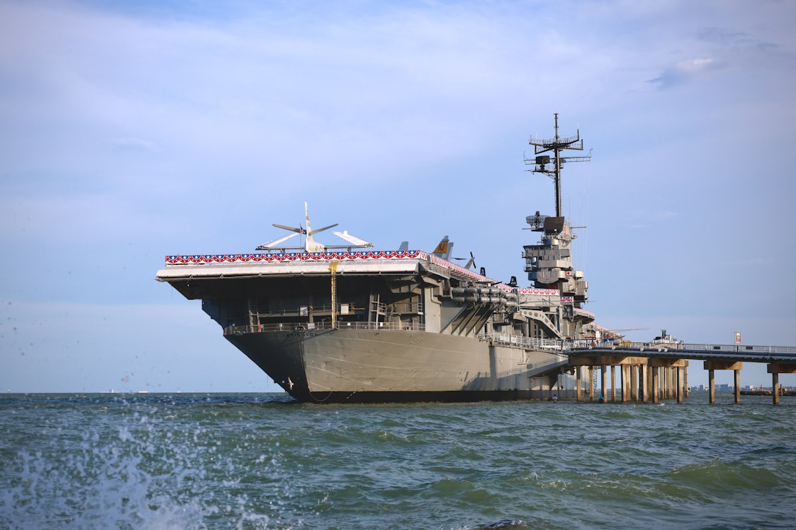
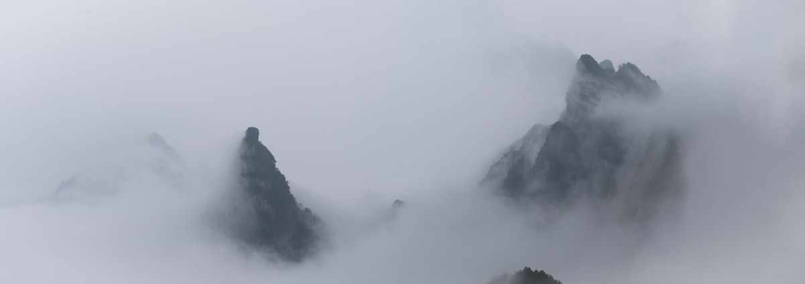

1核心结论
天津
→
海河两岸
→
五大道
→
意式风情区
→
滨海新区
→
蓟州盘山
→
返程
🕐 10 天怎么安排最合理
天津不大，但内容很满：市区是海河串起来的万国建筑长廊，滨海新区藏着航母与海洋博物馆，北边的蓟州则有盘山、独乐寺和黄崖关长城。10 天足够把「近代百年看天津」的洋楼、老街、港口和山野都走一遍，节奏可以放得很慢。
| 事项 | 结论 |
|---|---|
| 事项 | 结论 |
| 推荐方案 | 10 天 9 晚（市区 6 晚 + 滨海 1 晚 + 蓟州 2 晚） |
| 返程约束 | 第 10 天下午/晚间返程 |
| 行程链 | 海河 → 五大道 → 老街 → 滨海 → 盘山 → 黄崖关 |
| 预算（人均） | 经济 2800–3800 ／ 标准 4500–6000 ／ 舒适 7500–10000 |
| 三件提前事 | ① 国家海洋博物馆提前 1–3 天预约 ② 天津之眼错峰选日落场次 ③ 蓟州周末民宿提前订 |
| 季节提醒 | 春秋最佳；夏季闷热但海河夜风舒服，冬季干冷、游客最少 |
| 交通卡 | 地铁全线支持手机扫码，去蓟州可坐津蓟铁路 |
⚠️ 两个容易忽略的点
① 国家海洋博物馆免费但需实名预约，热门日期提前放号，务必盯着小程序。② 天津景点虽然密集，但海河夜景和五大道都需要步行/骑行，别把两个大馆排在同一天，否则脚力不够。
2推荐行程 · 10 天版
以下为 10 天 9 晚的推荐节奏。市区核心景点步行加骑行可达，滨海与蓟州各安排整天，节奏松弛。
| 日期 | 行程 | 过夜地 | 主题 |
|---|---|---|---|
| D1 抵津 | 入住和平区，傍晚海河边散步 + 天津之眼夜景 | 和平区 | 抵达 + 海河初印象 |
| D2 | 五大道万国建筑（骑行/马车）→ 民园广场 → 瓷房子 | 和平区 | 万国建筑 |
| D3 | 意式风情区 → 古文化街 → 天后宫 → 天津之眼（夜场） | 河北区一带 | 津味老街 |
| D4 | 天津博物馆/自然博物馆 → 五大道咖啡馆 → 相声茶馆 | 市区 | 博物馆 + 曲艺 |
| D5 | 滨海新区：国家海洋博物馆 → 泰达航母主题公园 | 滨海新区 | 滨海雄姿 |
| D6 | 东疆湾沙滩 → 妈祖文化园 → 返市区，南市食品街 | 市区 | 港口休闲 |
| D7 | 出发蓟州 → 独乐寺 + 渔阳古城街区 | 蓟州城区 | 千年古寺 |
| D8 | 盘山（全天，上盘松中盘石下盘水） | 蓟州城区 | 京东第一山 |
| D9 | 黄崖关长城 → 梨木台（可选）→ 返市区 | 市区 | 雄关秀水 |
| D10 返程 | 上午采购麻花/年画伴手礼，下午返程 | — | 收尾 |
🧭 路线可调原则
滨海（D5-D6）与蓟州（D7-D9）可整体互换；带老人孩子时盘山改用索道上下，并把长城换成独乐寺 + 古城轻松日。听相声记得提前订票。
3逐小时时间线
以下为 10 天全程的逐小时执行时间线，可当作「当天打开照着走」的清单。标注 ※ 的可选项视体力与天气取舍。
D1 · 抵达天津
入住和平区 + 海河夜景
🚇 抵达日
| 时间 | 事项 |
|---|---|
| 14:00–17:00 | 抵达天津（高铁到天津站/天津南，飞机到滨海机场），地铁进城入住 |
| 17:30–18:30 | 办理入住（推荐和平区五大道/小白楼一带，近地铁与核心景点） |
| 19:00–20:30 | 海河沿线散步：解放桥、世纪钟、津湾广场灯光夜景 |
| 20:30–21:30 | 天津之眼（参考价 70 元，日落场视野最佳）：海河上空看全城 |
| 22:00 | 回酒店休息 |
天津之眼周末排队久，建议提前在线上购票并选日落前后时段；拍照机位在永乐桥对岸的运河边。
D2 · 五大道 + 瓷房子
万国建筑一日
🏛 洋楼日
| 时间 | 事项 |
|---|---|
| 08:30–09:00 | 早餐：天津煎饼果子 / 锅巴菜 |
| 09:00–12:30 | 五大道（免费）：骑行或坐马车（约 80–100 元），逛马场道、睦南道、常德道的小洋楼群 |
| 12:30–13:30 | 民园广场周边午餐，或去小白楼商圈 |
| 14:00–15:30 | 瓷房子（参考价 50 元）：数亿片古瓷贴面的法式洋楼，拍照必去 |
| 16:00–17:30 | 五大道深处的咖啡馆/小店闲逛：庆王府、张伯苓故居外观 |
| 18:30 | 晚餐：天津菜馆（罾蹦鲤鱼、独面筋、贴饽饽熬小鱼） |
五大道最好骑共享单车，沿马场道→睦南道→重庆道走环形，全程约 1.5 小时。瓷房子上午和傍晚人相对少。
D3 · 意式风情区 + 古文化街
津味老街一日
🏮 老街日
| 时间 | 事项 |
|---|---|
| 08:30–11:30 | 意式风情区（免费）：马可波罗广场、梁启超故居、意大利风格别墅群 |
| 11:30–13:00 | 意风区午餐，或步行到金钢桥附近吃面 |
| 13:30–16:00 | 古文化街（免费）：天后宫、泥人张、杨柳青年画、桂发祥麻花旗舰店 |
| 16:30–18:00 | 海河游船（参考价 100 元，白天线）或沿河岸骑行回市区 |
| 19:00–21:00 | 天津之眼夜场（若 D1 已坐，可改去鼓楼夜市） |
| 21:30 | 回酒店 |
古文化街是最集中的伴手礼采购地：十八街麻花、果仁张、风筝魏、杨柳青年画都在这条街上。
D4 · 博物馆 + 相声茶馆
津门文韵一日
🎭 曲艺日
| 时间 | 事项 |
|---|---|
| 09:00–12:00 | 天津博物馆（免费需预约）：「中华百年看天津」通史陈列 + 镇馆之宝 |
| 12:00–13:00 | 文化中心商圈午餐 |
| 13:30–16:00 | 天津自然博物馆（免费需预约）：恐龙、海洋生物标本，亲子友好 |
| 16:30–18:00 | 五大道咖啡馆：慢时光 + 逛先农大院 |
| 19:00–21:30 | ※ 谦祥益/名流茶馆 听一场天津相声（约 80–150 元，提前订票） |
| 22:00 | 回酒店 |
天津是曲艺之乡，相声茶馆下午和晚上都有场次，旺季建议提前 1–2 天订座，约 2 小时一场。
D5 · 滨海新区（海洋博物馆 + 航母）
滨海雄姿一日
🚢 滨海日
| 时间 | 事项 |
|---|---|
| 08:00 | 市区出发（地铁 9 号线换乘或自驾约 1h 到中新生态城） |
| 09:30–13:00 | 国家海洋博物馆（免费，提前 1–3 天预约）：龙的时代、远古海洋、极地、中华海洋文明 |
| 13:00–14:00 | 生态城午餐 |
| 14:30–18:00 | 泰达航母主题公园（参考价 220 元）：基辅号航母 + 飞车表演 |
| 18:30 | 入住滨海新区酒店，晚餐海鲜 |
海洋馆非常大，建议按「龙的时代→今日海洋→极地」动线走，留 3 小时以上。航母公园的表演时间表现场为准。
D6 · 东疆湾 + 返回市区
港口休闲一日
🌊 海岸日
| 时间 | 事项 |
|---|---|
| 08:30–10:30 | 东疆湾沙滩（参考价 50 元）：渤海湾人工沙滩，亲水散步 |
| 11:00–12:00 | 妈祖文化园（免费）：世界最高妈祖像之一，滨海天际线机位 |
| 12:30–13:30 | 午餐：北塘海鲜 |
| 14:30–16:30 | 乘地铁 9 号线返回市区，酒店休整 |
| 17:30–19:00 | 南市食品街：小吃扫街（熟梨糕、茶汤、耳朵眼炸糕） |
| 19:30 | 回酒店 |
东疆湾是人工沙滩，7-8 月下海人多，其他季节以散步观海为主；风大浪急时注意安全。
D7 · 蓟州：独乐寺 + 渔阳古城
千年古寺一日
🏛 古建日
| 时间 | 事项 |
|---|---|
| 07:30 | 市区出发（自驾/津蓟高速约 1.5h，或津蓟铁路 S 字头班次） |
| 10:00–12:00 | 独乐寺（参考价 50 元）：千年古建，观音阁 + 山门为辽代原构 |
| 12:00–13:00 | 渔阳古城午餐 |
| 13:30–16:00 | 渔阳古街漫步：白塔寺、鼓楼、蓟州文庙 |
| 16:30 | 入住蓟州城区民宿，晚餐农家菜 |
独乐寺是中国现存最古老的木构楼阁之一，观音阁内 16 米高的泥塑观音值得细看；建议请讲解或提前做功课。
D8 · 盘山
京东第一山
⛰ 山岳日
| 时间 | 事项 |
|---|---|
| 08:00 | 早餐后出发，到盘山景区（蓟州城区西北约 10km） |
| 09:00–12:00 | 盘山（参考价 78 元，索道另计）：下盘水胜、中盘石胜，看乾隆御笔石刻 |
| 12:00–13:00 | 山上午餐或自带简餐 |
| 13:00–16:30 | 上盘松胜 → 挂月峰（864 米）：可乘索道往返，俯瞰燕山 |
| 17:00 | 下山返回蓟州城区，泡温泉（可选）或休息 |
盘山全程爬升大，建议索道上、步行下；山上天气多变，春秋带防风外套。乾隆「早知有盘山，何必下江南」就在这里。
D9 · 黄崖关长城 + 返津
雄关秀水一日
🏔 长城日
| 时间 | 事项 |
|---|---|
| 08:00 | 蓟州城区出发（黄崖关在城区北约 30km） |
| 09:00–12:30 | 黄崖关长城（参考价 45 元）：八卦关城、黄崖天险、水关 |
| 12:30–13:30 | 景区外农家午餐 |
| 14:00–16:00 | ※ 梨木台（参考价 70 元，可选）：北方小九寨，溪谷森林 |
| 16:30–18:00 | 返回天津市区（约 2h） |
| 19:00 | 晚餐，结束山野行程 |
黄崖关是明长城保存最好的段落之一，八卦迷魂阵式的关城是最大看点；体力一般就只登主城楼一段。
D10 · 返程
采购伴手礼 + 回家
🚄 返程日
| 时间 | 事项 |
|---|---|
| 08:30–11:00 | 自由活动：古文化街/食品街补货（十八街麻花、果仁张、杨柳青年画） |
| 11:00–12:00 | 午餐 |
| 12:30–15:00 | 退房，赴天津站/机场，返程 |
伴手礼推荐：桂发祥十八街麻花、果仁张、耳朵眼炸糕（真空装）、杨柳青年画、泥人张小件。
4景点图鉴
必去（必去）/ 顺路（顺路）/ 可跳过（可跳过）。
必去
天津之眼 参考价 70 元
世界上唯一建在桥上的摩天轮。海河夜景 + 30 分钟旋转，俯瞰全城。

必去五大道 免费
万国建筑博览馆。2000 余栋小洋楼 + 马车巡游，民园广场为枢纽。

必去瓷房子 参考价 50 元
瓷器包裹的法式洋楼。数亿片古瓷贴面 + 玛瑙水晶，全球罕见。

顺路意式风情区 免费
亚洲最大意大利建筑群。马可波罗广场 + 百年别墅，海河边。
 必去
必去古文化街 免费
津门老字号一条街。天后宫、泥人张、杨柳青年画。

必去国家海洋博物馆 免费（需预约）
「海上故宫」。龙的时代、极地、中华海洋文明三大常设展。

顺路盘山 参考价 78 元
京东第一山。上盘松、中盘石、下盘水，乾隆 32 次巡幸。
顺路
黄崖关长城 参考价 45 元
明代长城精华段。八卦关城、黄崖天险，山水相映。
图片为 Unsplash 主题图（天津之眼、海河夜景、瓷房子、盘山等为天津实景或同主题示意），用于页面配图。更多免费去处：津湾广场、鼓楼、北宁公园、西开教堂。
5路线地图
点击左侧节点可在地图上定位；点击地图 marker 会高亮对应节点。坐标为 WGS-84 转 GCJ-02 纠偏后标注。
6预算明细（三档）
以下为单人、不含购物的估算；门票为参考价，以现场为准。交通按高铁往返计（北京出发约 100–200 元，其他城市视距离而定），不同出发地浮动较大。
| 项目 | 经济（2800–3800） | 标准（4500–6000） | 舒适（7500–10000） |
|---|---|---|---|
| 往返交通 | 高铁约 300–800 | 高铁/飞机约 800–1500 | 飞机+接送约 2000–3000 |
| 住宿（9 晚） | 青旅/快捷 700–1000 | 连锁酒店 1500–2400 | 和平区星级 4000–5500 |
| 门票 | 基础景点约 250 | 含海洋馆+盘山约 450 | 全含+游船+演出约 700 |
| 餐饮（10 天） | 600–800 | 1200–1500（含老字号） | 2000–2600（天津菜馆+茶馆） |
| 市内交通 | 地铁公交 100–150 | 地铁+打车 250–350 | 打车/包车 500–800 |
💰 标准档示例账单（人均约 5200 元）
高铁往返 600 + 住宿 9 晚 1900（双人分 3800）+ 门票 450 + 餐饮 1300 + 市内交通 300 + 蓟州段拼车 250 ≈ 4800 元。主要浮动项是住宿地段和是否坐索道/游船，提前订可省 300–600 元。
7备选方案
7.1 城市慢游 5 天版
- D1 海河+天津之眼
- D2 五大道+瓷房子
- D3 意风区+古文化街
- D4 海洋博物馆（滨海）
- D5 返程
7.2 亲子滨海版
带娃主推：国家海洋博物馆、泰达航母、天津自然博物馆、动物园、方特欢乐世界；把蓟州压缩为 1 天盘山索道游，节奏更轻松。
7.3 冬季淡季版
12–2 月游客少、酒店便宜 30–40%，海河结冰别有风味；户外体感冷，天津之眼与海河游船注意保暖，海洋馆/博物馆类室内行程占比加大。
8交通与住宿
8.1 天津 ⇄ 各地 交通
| 方式 | 时长 | 参考价 | 备注 |
|---|---|---|---|
| 高铁（推荐） | 北京 30 分钟，其余视出发地 | 二等座 55 元起 | 天津站/天津西/天津南，班次密集 |
| 飞机 | 视出发地 1–3h | 300–1500 元 | 天津滨海国际机场，地铁 2 号线进城 |
| 自驾 | 视出发地 | 高速+停车费 | 市区停车贵，去蓟州自驾更方便 |
⚠️ 市内交通核心提醒
天津地铁 9 条线基本覆盖主要景点，手机扫码即可乘车；去蓟州可选津蓟铁路（S 字头，约 2 小时）或自驾，滨海段地铁 9 号线直达塘沽/生态城。
8.2 市内交通
- 地铁：主要景点全覆盖，扫码进站，单程 2–6 元
- 共享单车/骑行：海河沿线与五大道首选，随扫随走
- 公交：2 元，古文化街等老城区线路多
- 打车：市区短途 15–30 元，高峰易堵
- 去蓟州：津蓟铁路 / 大巴，或自驾约 1.5–2h
8.3 住宿区域推荐
| 区域 | 价格/晚 | 优点 | 短板 |
|---|---|---|---|
| 和平区（五大道） | 快捷 300–450 / 星级 600–1200 | 近五大道、瓷房子、地铁 1/3 号线 | 游客多，旺季贵 |
| 天津站/意式风情区 | 民宿 300–500 | 近海河夜景与老街 | 部分老房隔音一般 |
| 滨海新区 | 快捷 250–400 | 近海洋馆/航母，便宜 | 离市区远 |
| 蓟州城区 | 民宿 200–350 | 近盘山独乐寺，农家菜香 | 周末房源紧张 |
9美食清单
🍽 必吃经典
- 狗不理包子（尝鲜即可）
- 煎饼果子、锅巴菜
- 罾蹦鲤鱼、独面筋、八大碗
- 天津打卤面、煎饼卷菜
🥮 伴手礼
- 十八街麻花（桂发祥）
- 耳朵眼炸糕（真空装）
- 果仁张、崩豆张
- 杨柳青年画、泥人张
🍢 小吃街
- 南市食品街（熟梨糕、茶汤）
- 古文化街（麻花、糖画）
- 西北角回民小吃（早点）
📍 去哪吃
- 五大道小白楼商圈（老字号）
- 意式风情区（西餐+津菜）
- 西北角（清真早点胜地）
- 北塘/塘沽（海鲜）
⚠️ 美食防坑
① 狗不理更适合打卡，本地人更爱点煎饼果子配锅巴菜；② 景区周边「老字号」多为游客店，认准居民区里排队多的店；③ 海河游船边的海鲜排档价格偏高，吃海鲜去北塘更实在。
10出行贴士
10.1 行前清单
- 身份证、充电宝
- 舒适步行鞋（日行 2 万步）
- 防晒霜、墨镜（夏季）
- 薄外套/保暖外套（按季节）
- 海洋馆提前 1–3 天预约
- 天津之眼选日落场并提前购票
- 下载地铁/共享单车 App
- 关注海河游船班次与天气
10.2 防踩坑
🧳 四条提醒
① 海洋馆预约是头等大事，热门日期提前放号；② 天津之眼旺季排队 1–2 小时，避开周末晚高峰；③ 五大道不建议买路边兜售的「三轮车导览」，骑行自己逛更自由；④ 蓟州山区信号弱，提前下载离线地图。
🌟 一句话总结
天津是「近代百年浓缩在一城」的港口都会——海河是骨架、洋楼是表情、麻花与相声是烟火气，北边的盘山长城又补上了山水味。10 天慢逛，正好把津门的厚度走完；最要紧的只是提前约好海洋馆，剩下的交给海河的风。